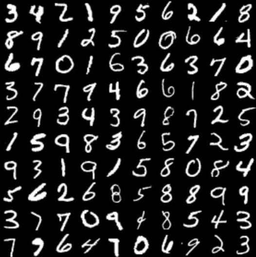

In the course APSC 100, I had the opportunity to work with the Queen’s AI Club (QMIND) for the first time. I worked with a team of five students on a project aiming to classify handwritten digits with different machine learning techniques. The methods we used include k-nearest neighbor, convolutional neural networks, and Naïve Bayes Classifier.
The project consists of a graphical user interface (GUI) where the user can draw an image on a sketchpad and have the each AI models each make their predictions. The models were trained using the MNIST dataset, a series of 70,000 28x28 pixel images containing handwritten digits. The training consisted of testing and modifying the models to maximize the accuracy of their guesses, making changes until the accuracy was sufficient.
Our convolutional neural network (CNN) was the most effective model, scoring an accuracy of 97%. The other two models, Naïve Bayes Classifier and k-nearest neighbor, only scored an accuracy of 80% and 75% respectively. These models weren’t as accurate because they aren’t as suitable for this kind of classification problem. However, it was still interesting to learn more about them and see how they held up next to the CNN. We also experimented with combining the models, taking a weighted average of the three. The CNN was weighted higher than the other two models such that the combined model would always take the output of the CNN unless the other two models reached a consensus that differed from the CNN’s. This combination of models had the highest accuracy of all, correctly guessing the digit 98.5% of the time.
My primary role for this project was the development of the convolutional neural network, mostly working with one other member of the team on this side of the project. I became familiar with the process of machine learning, as well as the components of a neural network. I also gained experience as the lead developer of the graphical user interface using Tkinter in Python, creating a simple yet effective interface to demonstrate the models. At the end of the project, the team constructed a 28-page document including a detailed description of the design process, project planning, results, and several graphs, charts, and images. I took the lead in editing and proofreading the document, and we were proud to receive an A on the final presentation.